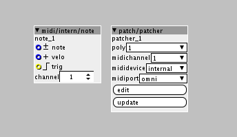

For some reason I thought that you wanted to use the seauencer for something external, like to trigger a synth.
If you want to make your synth voice polyphonic, there is a lot simpler way of doing so:
- Make a subpatch.
- Push "edit" button on subpatch.
- Go the drop down menu called "view" and select "settings".
- Set the drop down menu called "subpatch mode" to polyphonic.
- Close the menus and go back to the main patch and push the "update" button on the subpatch.
- Now you have a polyphonic subpatchm you can set amount of voice.
To be able to trigger this poly subpatch internally from Axo, you need to use the "midi/intern/note" object:

EDIT:
Oh, after downloading your patch I see you already use the poly idea for the whole structure. Couldn't see that from the picture.
I am not really 100% sure what you are trying to do here, with the sequencers. When you say polyphonic sampler what do you exactly mean? You want to be able to play chords with the sampler? Or.....?
I think it's fairly uncommon to have the sequencers inside the synth voices. But I guess that's the cool part about Axoloti, there is no rules 
I am just not 100% sure what the goal is.
EDIT 2:
Ahhh, so the sequencers inside the voice subpatch are just there to trigger the the 2 table/play pitch individually. I would say that could be done simpler. Something like this, using inv object:
Or maybe you could try making the voices polyphonic too? Although I am not sure if Axoloti can handle poluhonic subpatches inside polyphonic subpatches. You could try it out

{kind=link}
{kind=link}
{kind=link}